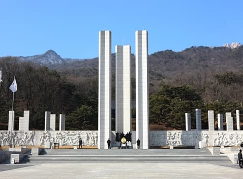

| 대표이미지 | 상호 | 설명 | 홈페이지 | 문의 및 안내 | 이용시간 | 위치 |
|---|---|---|---|---|---|---|
|  | 국립4·19민주묘지 | 삼각산(북한산) 기슭의 국립 4·19 묘지는 1960년 3·15 부정선거를 자행한 권력에 맞서다 1960년 4·19 혁명 때에 희생된 224분이 안장되어 있으며, 이를 기리는 기념탑이 세워져 있다. 기념탑 중앙에는 의롭게 죽어간 이들을 기리는 탑문이 새겨져 있다. 135,901㎡의 묘지 경내에는 소나무와 향나무, 주목과 단풍나무 등으로 아담하게 꾸며져 있으며, 1,652.9㎡ 규모의 기념관과 영정을 모신 유영봉 안소는 한식 목조건물이 330.58㎡ 규모로 확장되어 있다. 그 외에 상징문, 민주의 뿌리, 정의의 불꽃 등 조각 작품과 연못이 있으며, 보도블록을 예쁘게 깔아 놓은 산책로와 야외 의자도 있다. 벚꽃이 피는 5월, 공원에서 바라보는 삼각산(북한산)은 어머니 품과 같은 아늑함과 화려함을 동시에 느낄 수 있으며, 일몰의 풍경은 장관이다. | 홈페이지 연결! | 02-996-0419 | 07:00~17:00 | 서울특별시 강북구 4.19로8길 17 |